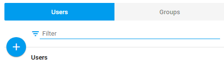
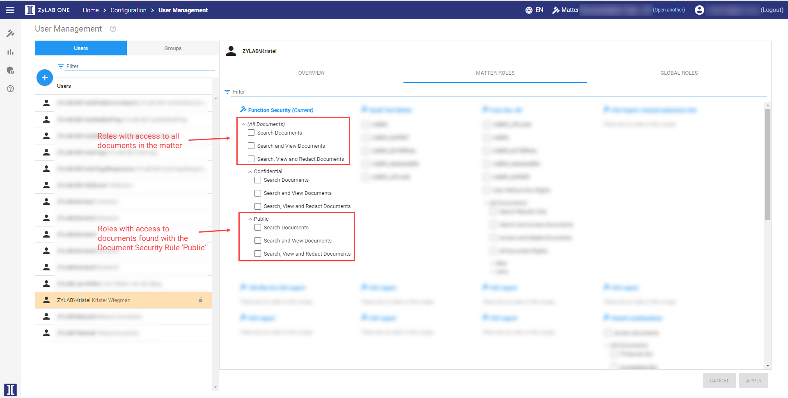

User Management
Add or delete users/groups and assign roles to them.
-
On the Home page, select Configuration:

-
Select User Management:

Add Users/Groups
Select  to add users/groups from the Active Directory.
to add users/groups from the Active Directory.
Delete User/Group
Delete a user/group from User Management, if it is no longer needed.
You can always add the user/group again from the Active Directory.
Assign Role to User/Group
Global roles assigned to users/groups apply to all matters.
Matter roles apply to one specific matter.
Users and groups are derived from the Active Directory.
-
Select a User/Group from the tabs on the left.
Filter if needed.

-
For a selected group, select the Related Users tab for an overview of all users in this group.
You can select and copy this list and paste it into a spreadsheet.
-
Assign/remove a Global role via the Global Roles tab.
Assign/remove a Matter role via the Matter Roles tab.
-
In the Matter Roles tab you can select a role that can be assigned in combination with Document Security rules (when such a role is created in Role Management).
Document Security rules enable you to refine access to documents per user (group).
In the example below, you can assign roles with access to all documents and/or roles with access to the documents found with a specific Document Security Role.
Note: It is possible to combine roles for one user (or user group).
For example, a user might be allowed to search all documents, but only be allowed to view the set of Public documents.

-
For an overview of all assigned roles to a user or group, select the Overview tab.